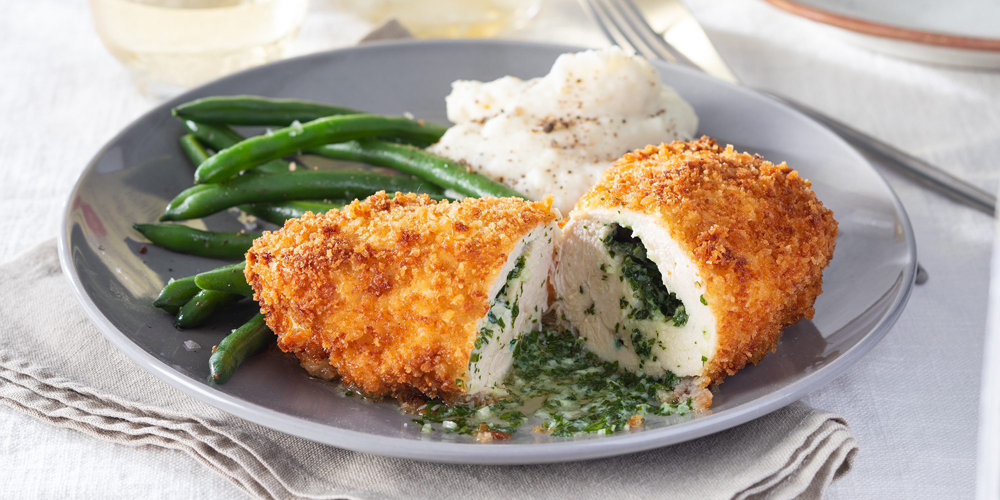

Homepage
Ukrainian Cuisine
Chicken Kyiv

- Servings: 4
- Yield:4 servings
- Prep: 30 mins
- Cook: 20 mins
- Additional:45 mins
- Total: 1 hr 35 mins
Ingredients
- 2 cloves garlic, minced
- 1 pinch salt
- 2 tablespoons chopped fresh flat-leaf parsley
- 6 tablespoons unsalted butter
- 4 (8 ounce) skinless, boneless chicken breast halves, pounded to 1/4-inch thickness
- salt and pepper to taste
- 1 cup all-purpose flour
- 2 teaspoons salt
- 2 eggs, beaten
- 2 cups panko bread crumbs
- 1 pinch cayenne pepper
- 2 cups vegetable oil for frying, or as needed
Directions
- Grind garlic and a pinch of salt together in a mortar and pestle until garlic is completely smashed. Add parsley and mix until completely incorporated. Pound butter into garlic mixture with pestle until parsley and garlic are fully incorporated into the butter. Wrap the butter mixture in plastic wrap and refrigerate until cold, at least 15 minutes.
- Season chicken breasts with salt and pepper. Place 1/4 of the butter mixture in the center of wider end of each chicken breast. Fold the narrower end of each chicken breast up over the butter to form a tight pocket around the butter. Gather the sides of each chicken breast to the center to form a round ball. The top of the chicken will be smooth and the bottom will be gathered. Tightly wrap each chicken breast ball in plastic wrap, put wrapped breasts on a plate, and chill in the freezer until the gathered bottoms hold together and are slightly firm, about 30 minutes.
- Whisk flour and 2 teaspoons salt together in a shallow bowl. Whisk eggs together in another shallow bowl. Pour panko bread crumbs into another bowl.
- Remove chicken breast balls from plastic wrap. Gently press each chicken breast ball into flour mixture to coat and shake off any excess flour. Dip into beaten eggs, then press into bread crumbs. Place breaded chicken onto a plate, cover with plastic wrap, and return to the freezer to chill until firm, about 15 minutes.
- Heat oil in a deep-fryer or large saucepan to 350 degrees F (175 degrees C). Preheat oven to 400 degrees F (200 degrees C). Line a baking sheet with aluminum foil.
- Working in batches, cook chicken, gathered-side down, in hot oil and until lightly golden on both sides, about 1 minute per side. Transfer to prepared baking sheet. Sprinkle salt and cayenne pepper over the top.
- Bake in the preheated oven until you can hear the butter start to sizzle on the baking sheet, 15 to 17 minutes. An instant-read thermometer inserted into the center should read at least 165 degrees F (74 degrees C). Let rest for 5 minutes before serving.
Nutrition Facts
Calories: 790
- Protein 59.5g;
- Carbs 62.2g;
- Fat 38.3g;
Check also this:
Ukranian Borsch